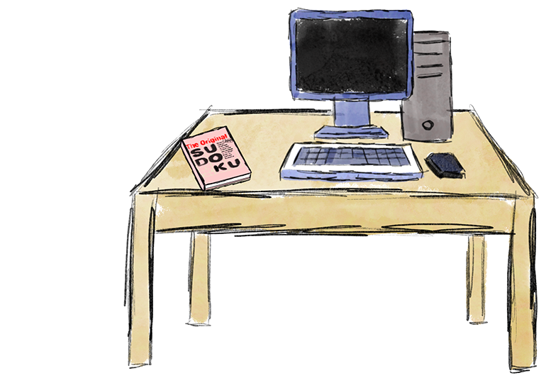
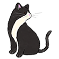
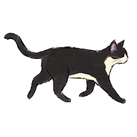
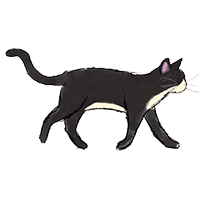
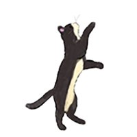

schwulstcommunicatesthatthewebisnotjustanisolatedspacebutrathermorelikeanenvironmentwhereallwebsitesbreatheandgrowinthepastdecadeprivatecompanieshavetakenoverthisspacetocapitalizeonprofitshoweverschwulstisarguingthatthewebneedstoberunbyindividualswhowillprioritizetheneedsoftheuserthewebiscomparedtoaflockofbirdsoraseaofpunctuationmarksthoughibelievethatitsmorelikeaforesteveryplantintheforestgrowsatitsownpaceandthevarietyandquantityofplantsarecountlessdiscussionquestionshowdoesthemonetizationofthewebaffecttheuserexperiencehowisawebsiteuniquecomparedtoothermediumsofarthowcanwebsitecreatorstakeadvantageoftheeverchangingspacethepreservationofgeocitiesareextremelyusefultotheanalysisofthewebbecauseinherentlythewebitselfhaslittletonoarchivesincepagesareconstantlybeingupdatedandrevampedlookingatafewgeocitypagestheyfeltveryrawandorganicexplicitlyshowcasingtheintentofthepagegeocitiesshowthedevelopmentofthewebsincethe2000sandhowthepurposeofwebsiteshavetransformedhoweverevenwiththepreservationattemptmanylinksandimagesarestillinaccessiblethediscontinuingofgeocitiesbyyahoohasdestroyedmassartbutcontrarilyalsobroughtpeopletogethertopreservethemediumandhighlightthebeautyofitthecommunitiesbuiltwithinthegeocitiesareunlikewhatwehaveonthewebtodayhowdoescommunityinspireartonthewebwebpagesvanishduetothesearchalgorithmsallthetimeisthistheinherentnatureofthewebdowebpageshavetobeconstantlyupdatedandmaintainedinordertostayalivethewebitselfdidntappearoutofnowhereitdevelopedinstagesanditsfunctionandaccesschangedwitheverystagewiththismarisaassertsthatwiththeemergenceoftheinternetandthewebalsocamepostinternetartinthepostinterneteraofartartismorecollaborativethroughouttheworldwidewebpostinternetartdoesntsolelyrefertotheartbuttheshiftmindsetwaysofdistributionandpresentationhavelargelyexpandedchangingthewayartistscreatearthowdidthepostinternetarterashifthowartiststhoughtabouttheirpresentationanddistributionoftheirarthowdidmediumsadapttothischangehowdoesaworkbeingbothaphysicaloradigitalelementchangeaviewersexperiencecoklyatandfinneganarearguingthatartisthavearesponsibilitytomaketheirartasaccessibleastheycantotheirviewersalttextisonewaythatartistcandothatilikethemetaphorthatalttextislikeatranslationbutevenwithlanguagetranslationsubtlemeaningsandconnotationsarelostitisdefinitelyimportanttoincludealttextsothatallviewerscanenjoytheartiappreciatehowcoklyatandfinneganbreakdownwhatalttextisandhowpeoplecancreatealttextthecontentsofalttextincludewhyisthisimageherewhatinformationisitpresentingandwhatpurposedoesthisfulfillcanonlyafewsentencesdescribeanartpieceinthedepththatanartistintendedforvisuallyalthoughalttextdoesprovideaccessibilitytothevisuallyimpaireddoesalttextremoveabilityforambiguityandinterpretationsofartcommunicationbetweenculturesisespeciallyimportanttodayintheincreasinglyglobalizedworldandyetnasserpointsouthowoneofthemostusedcommunicationmethodstechnologyisextremelywesternizednasserusesarabicasanexampleofhowcodingandtextdisplaydoesnotallowforthefullappreciationorculturalcorrectnessofarabiciamsurethisisthecaseformanyotherlanguagesthatareusedonthewebhowevereventhensomanylanguagesarenotportrayedonthewebhavinglocalizedwebsthatthenconnecttothebiggerwebwouldallowforamuchmorediversewebwhataretheprosandconsofalocalizedwebhowwoulditchangethecurrentsystemofinformationflowhowcanlanguagesbebetterencompassedonthewebasdesigntoolsbecomemoreaccessibleandpopulartothegeneralpublicthedistinctionbetweencasualusersandprofessionaldesignersbecomesblurredthisthreatenstheentireideaofaprofessionaldesignerifitisaccessibletoeveryoneotherthreatstoadesignersjobincludeaiandonlinedesignservicesservicessuchasfiverrofferfastdesignsbyaiandhumansbutreducetheentireprocesstomerelyvisualcomponentsandtemplatestructurestheintroductionofcodingintothedesignspacehasaddedalevelofcomplexityandprestigetothefieldwiththealreadypreconceivednotionthatdesignshouldbeautomatedbyaicodeisincreasinglybecomingaskillthatdesignersarelearningtoincreaseemployabilityhoweverlorussostatesthatcodingisbecomingmoreofasemiskilledlaborandcodingitselfisalsostartingtobereplacedbyaiwhatdistinguishesaprofessionaldesignerfromaneverydayuserwhatwayscanwepreservetheimportanceofdesigntodaydottuerexploreshowhumanconnectioncantraverseacrosslongdistancesthroughtheuseoftheonlinegameofcradlescatparticipantswereabletoplaythisphysicalgamefromalldifferentplaceshoweverthisformofconnectionalsoimposesalossonphysicalconnectionasparticipantshadtoplaythegamethroughwordsandnumbersbecauseofthistuerarguesthatthereisapathoswhichtransfersthenewmediatoapoeticsofabsencetueralsoexploresbodymissingwhichreferstothehumanbodieslostduringtheholocausttheworkexplorestheartisticmediumsthebodymissingemployedtosharetheatrocitythesetwoworksexploredifferentaspectsastohowtheinternetcanbeusedtoconveyaphysicalconnectionwhilebeingfaraparttodaypeoplearemoreconnectedovertheinternetthaneverbeforewiththecreationofvideoandaudioconnectionsinwhatwaysistheabsencestillpresentontheinternethowcanwebsitesbetterincorporateconnectionsnotonlybetweenuserandcreatorbutuserandusersoulellisexploreshowtheactofmakingsomethingpublichasshiftedfromtraditionalpublishingtothecontinuousalgorithmicfeedofcontentamajorconcernthatsoulellisisthenewsmoothflowofcontentintoourattentionlargesocialmediacompanieshaveseamlesslyintegratedendlessfeedsofcontentintoourdaytodaylivesoverconsumptionofmediahasledtoanumbnessintheinformationweconsumewhereanadvertisementandafriendsphotoareheldatthesameweighthowcanwetakebackcontrolofthecontentweconsumehowdoesaialreadyaffectwhatweperceiveasrealityinthecontentwedoconsumehenryisarguingthatthemoderninternetisbeingcorruptedbycorporationsandshareholderstakingawayfromtheinitialpurposeofawebsiteandshiftingfocustopopularityandcloutsocialmediahasalteredthemeaningofcreatingontheinternettoservinganalgorithmratherthanforthesolepurposeofenjoymenthenrypresentssomewaysthatwecantakebacklibertyofwhatwecreateonthewebsuchasjoiningasmallcommunityandfocusingongrowthanddevelopmenthowcanusersmakesocialmediamoresustainableforcreationandconsumptionifpossiblehowdosocialmediaplatformsimprisonusersbyowningtheirnetworksandcontentgroysarguesthatduetothemoderndaywebarthasshiftedfromsolelytheproducttonowincludetheartisticprocessthisshifthasturnedthedocumentationoftheartisticjourneyintoaformofartitselfbutbecauseofthisfreedomofpublicationonthewebtheselectivityofwhatisconsideredartisnownonexistentforbetterorworsetheabilitytoopenlypublishandaccessartonlinenotonlytakesawayselectivityfromtheartistssidebutalsoopensupaccesstotheviewerssideviewersnowcantakeartawayfromthecollectionanduseitinadifferentcontextwhichallowstheartworktotransformalongwiththetimehowdoestheabilitytodecontextualizeartonlinegiveviewersauthorityoftheartisthelackofselectivityonlinebeneficialordetrimentaltoart




